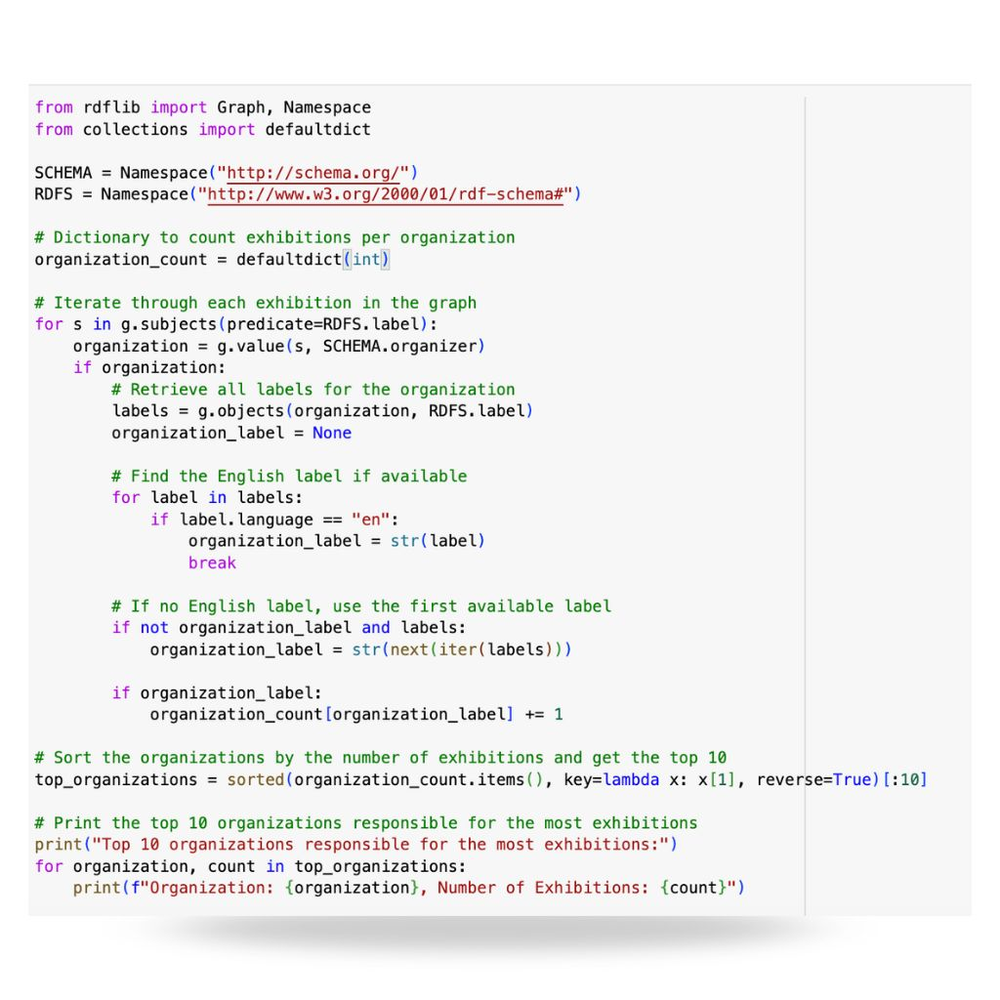
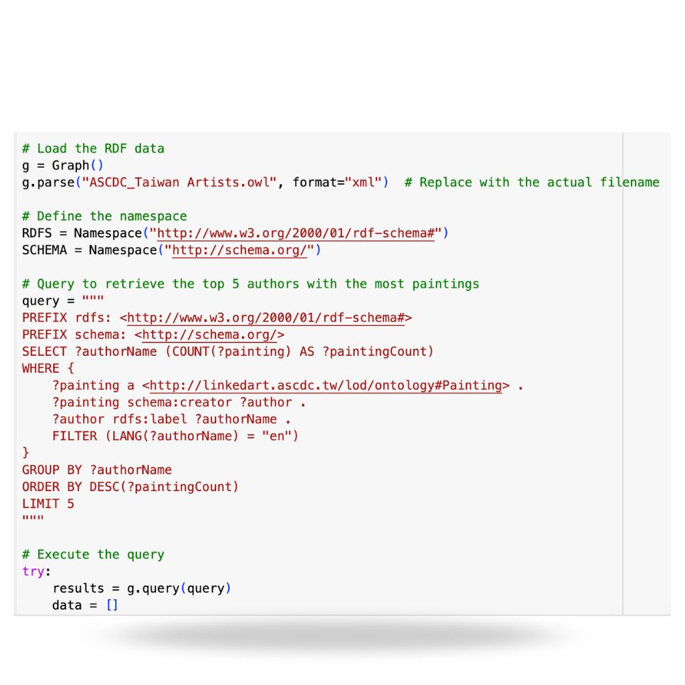
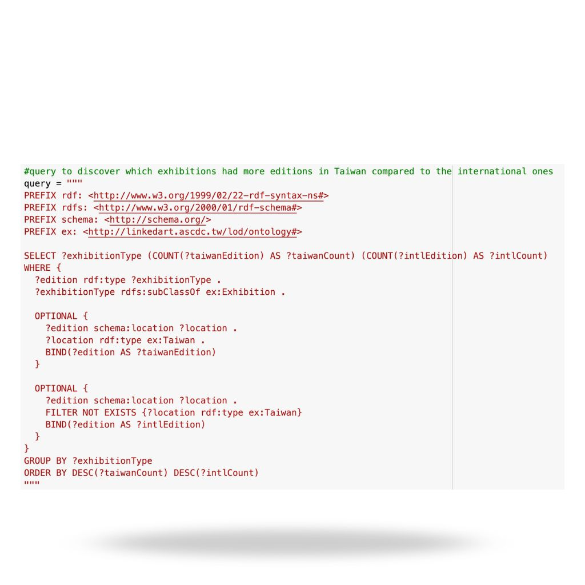

The Questions
1895 - 1945
Behind the queries:
The starting point of the exploration are the questions we have been reflecting on. From them we have been usign SPARQL query language and get insightful results.
We downloaded the OWL file of the dataset at this link. Then we manually changed some date format issues regarding the birth and death date in order to make them compliant to the 8601 ISO format. After this brief data cleaning process, we imported Python's rdflib library to load our OWL file and then query the ontology. In this way an RDF graph is created, our OWL file called ASCDC_Taiwan Artists.owl is loaded in XML format and a namaspace is defined to shorten references to resources contained in the ontology. Therefore, we made a series of SPARQL queries to extract informations related to the artists and what they did during their artistic production.
Organizations and Exhibitions
We have been investigating about these entities to understand the context of the Taiwanese Art.
Which are the top 10 Organizations responsible for the most exhibitions?
The Japanese Ministry of Education, Science and Culture was the most active organization. The taiwasese organizations had a slower activity.
What exhibition had more editions in Taiwan compared to the international exhibitions?
The results offer insights into the geographic distribution of artistic events and help understanding the prominence of Taiwan-based exhibitions in the broader art scene.
When the exhibitions took place during the Japanese colonial period?
The year by year distribution of Taiwanese art exhibitions.
Artists and Artworks
Our focus of analysis moved into the core of the Taiwanese Art: the artists with their artworks.
Who are the most influential Taiwanese artists during the Japanese colonial period (1895-1945)?
The first generation Western style painter in Taiwan Chen Cheng-po is one of the most iconic figures in Taiwanese art history. He was the first Taiwanese artist, whose works were selected into the Imperial Art Exhibition.
Which kind of artistic objects do we have in the Taiwainese artist Data Base?
At the heart of this collection, three essential types of works emerge: paintings, photographs, and postcards.
Other Questions
Exploring more about Chen Cheng-Po
Artistic Production
Which works by Chen Cheng-Po are preserved in museums and what materials or artistic techniques did he use?
Historical Events, Award and Recognitions
What historical events influenced his life and career and has he received any awards or recognitions?
SPARQL queries
The language we used to perform our analysis



Chart Journey
From a chart to a story of exploration